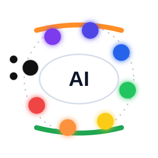
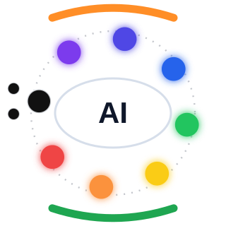
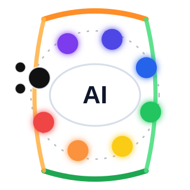
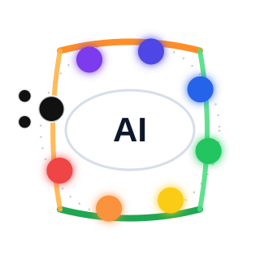
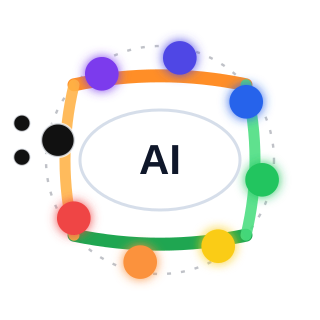
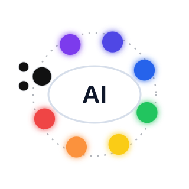
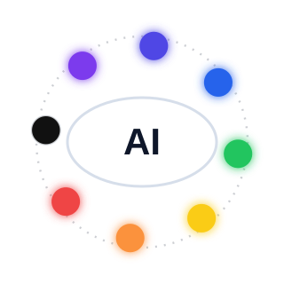

Option 1
Lines On Dots
site/logo-options/logo-01-lines-on-dots.svgOption 1 keeps lines on the dots. Option 2 keeps lines above the dots. Option 3 connects the outer lines above the dots. Option 4 connects them on the dots. Option 5 connects them inside the dots. Option 6 has no lines. Option 7 has no lines and only one black dot.

Lines On Dots
site/logo-options/logo-01-lines-on-dots.svg
Lines Above Dots
site/logo-options/logo-02-lines-above-dots.svg
Connected Above Dots
site/logo-options/logo-03-connected-above.svg
Connected On Dots
site/logo-options/logo-04-connected-on.svg
Connected Inside Dots
site/logo-options/logo-05-connected-inside.svg
No Lines
site/logo-options/logo-06-no-lines.svg
No Lines, Single Black Dot
site/logo-options/logo-07-no-lines-single-black.svg